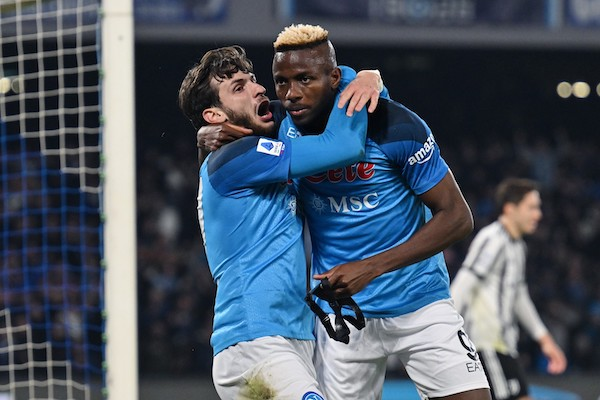
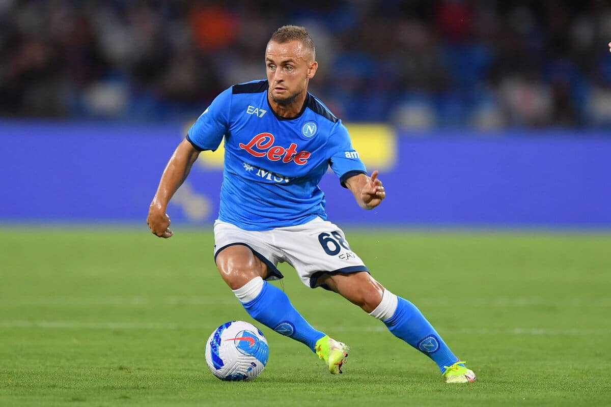
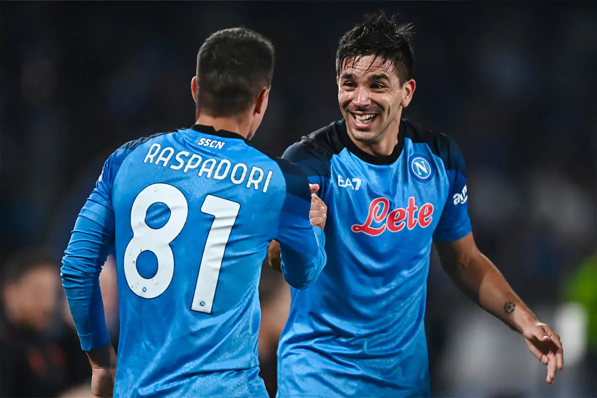
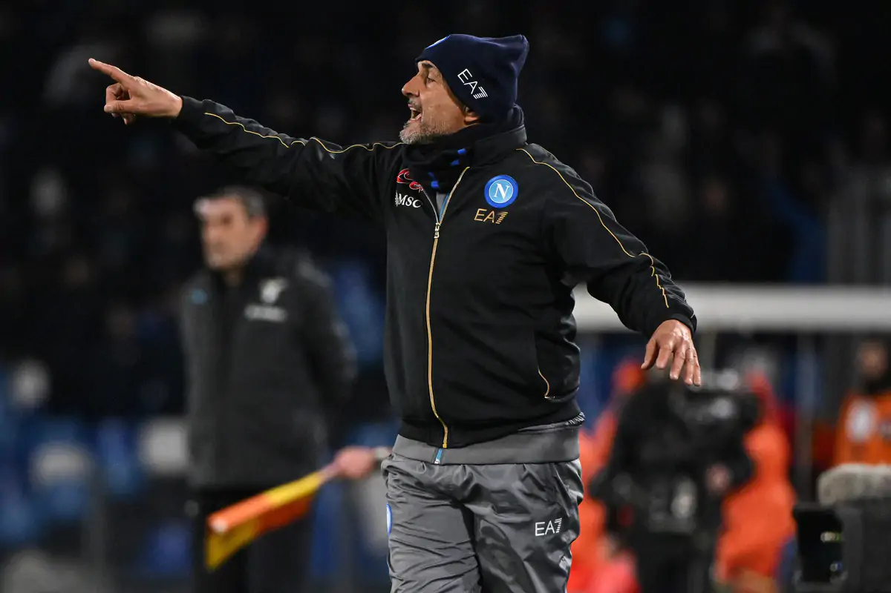

Giulio Sichili
24-03-2023
Giulio Sichili
24-03-2023
I due giocatori con il maggior contributo in gol e assist di tutto il campionato italiano: Osimhen è migliorato tantissimo, trovando anche una maturità caratteriale che era mancata nelle sue prime stagioni sotto il Vesuvio; Kvaratshkelia è stata una vera sorpresa.
Devastanti
Una vita da mediano. Il suo lavoro, anche se non spettacolare come quello degli attaccanti, è fondamentale per la squadra. È il perno tra difesa e trequarti offensiva, si gira tra gli avversari con un'eleganza che ricorda nientemeno che Andres Iniesta, e proprio per questo, è forse l'unico vero insostituibile della rosa di Spalletti.
Liquido
I terzini stanno trascinando il Napoli con il loro carisma, e stanno dimostrando partita dopo partita dei miglioramenti impressionanti rispetto alle loro passate stagioni. Giovanni Di Lorenzo, il capitano, partito dalla Serie C, gradino dopo gradino adesso si gioca la Champions. Il maestro, Mario Rui, aspramente criticato dai tifosi in passato, adesso è un calciatore maturo che sforna assist con grade continuità e qualità. Il problema dei terzini non all'altezza, disco rotto negli scorsi anni, adesso si è trasformato in un punto di forza della squadra.

Stacanovisti
Se il Napoli di Sarri era caratterizzato da uno scarsissimo (o assente) turnover, questo trova invece nelle riserve una risorsa importante per sbloccare le partite, quelle poche volte in cui è necessario. Simeone e Raspadori si sono rivelati decisivi in campionato e anche in Champions, capitalizzando le occasioni ricevute per scendere in campo.
Provvidenziali
Dopo innumerevoli secondi posti, Luciano Spalletti ce l'ha fatta: ha costruito una squadra che secondo vari allenatori è "ingiocabile", frutto di svariate soluzioni tattiche, dominio territoriale e un atteggiamento aggressivo.
Uomini forti, destini forti. Uomini deboli, destini deboli